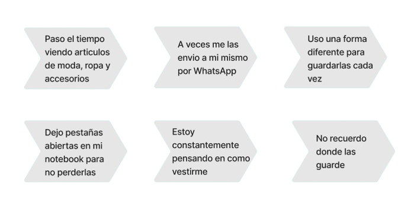

BACKGROUND
En aquel entonces acababa de terminar mi estudios en diseño ux, y en charlas comunes con mi novia y amigos y
surgia constantemente el tema de la moda, sus accesorios, calzado y mas, por lo que me puse a investigar en Google,
youtube, Pinterest y otros. Me encontré con paginas y videos que podian sugerirte las mejores combinaciones de ropa
basandose en los colores y la moda, pero ninguno tenia la opcion de un guardado facil o bien simplemente no se
adecuaban a las prendas que cada persona poseia en casa y sobre todo a mano, entonces teniamos que recurrir a hacer
capturas de pantalla, guardar links en gmail o enviar videos por WhatsApp, etc... y luego cuando queriamos acceder
era una frustracion o perdida de tiempo encontrar los colores justos para el momento justo...
EL PROBLEMA
Todas las personas conocen la sensacion de desorden y frustracion que se crea al no saber que ropa luciria mejor en
todo momento y terner que recurrir a capturas de pantalla guardadas en nuestros teléfonos, correos electrónicos que
nos envían amigos o nosotros mismos, por lo que terminamos teniendo tos links sin saber dónde están y dónde
encontrarlos cuando queramos vestirnos.
Solución y objetivos Cuando comencé mi investigación, era extremadamente
importante para mí crear un producto que tuviera algo nuevo, vi que había pocas aplicaciones de organización de pren-
das pero no se adaptaban a mi visión y no lograban lo prometido. Mi objetivo era crear un producto que se convierta
en una solucion para la vida cotidiana de las personas, un lugar donde puedan guardar sus prendas con todas las combina-
ciones posibles, editarlas, crear sus propios looks, buscar inspiración y poder compartirlo y lucirlo con sus amigos, y
finalmente tener una vestimenta perfecta.
INVESTIGACION DE USUARIOS / USER RESEARCH
Para comprender el problema y las necesidades de los usuarios,
realicé una encuesta utilizando Google Forms a 35
personas
amantes de la moda. Estas son algunas de sus respuestas y
datos que recopilé:
P: Cuando encuentres una combina-cion de ropa que te guste en la web y
quieras usarla, ¿dónde la guardarías?
¿Cómo volverías a ello más adelante?
¿Cómo sabes si coincide con tus prendas a mano?
